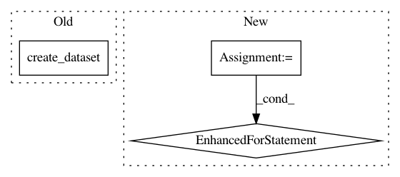

360ed9d9b6a8f25e8ec1302b523ca3dcc97c6f02,theanolm/network/network.py,Network,get_state,#Network#Any#,255
Before Change
if name in state:
state[name][:] = param.get_value()
else:
state.create_dataset(name, data=param.get_value())
self.architecture.get_state(state)
def set_state(self, state):
After Change
:param state: HDF5 file for storing the neural network parameters
for layer in self.layers.values():
layer.params.get_state(state)
self.architecture.get_state(state)
def set_state(self, state):
Sets the values of Theano shared variables.
In pattern: SUPERPATTERN
Frequency: 5
Non-data size: 3
Instances
Project Name: senarvi/theanolm
Commit Name: 360ed9d9b6a8f25e8ec1302b523ca3dcc97c6f02
Time: 2016-12-06
Author: seppo.git@marjaniemi.com
File Name: theanolm/network/network.py
Class Name: Network
Method Name: get_state
Project Name: ilastik/ilastik
Commit Name: dae870906ed0f054169598fa6b6e1768eb699fc9
Time: 2013-04-22
Author: kemal.eren@iwr.uni-heidelberg.de
File Name: ilastik/applets/objectExtraction/objectExtractionSerializer.py
Class Name: SerialObjectFeaturesSlot
Method Name: serialize
Project Name: calico/basenji
Commit Name: b5cac138037548c6c12c3a1b052f16a34c665162
Time: 2016-12-19
Author: drk@calicolabs.com
File Name: bin/basenji_sat.py
Class Name:
Method Name: parse_input
Project Name: ilastik/ilastik
Commit Name: 5b5dcc277f30bd353330ee3ce8c9f976bd37733c
Time: 2017-06-27
Author: bergs@janelia.hhmi.org
File Name: ilastik/applets/base/appletSerializer.py
Class Name: SerialListSlot
Method Name: _saveValue
Project Name: ilastik/ilastik
Commit Name: 23bf9b02f92cbebc772fe0574b69a598aa3cd367
Time: 2015-11-25
Author: bergs@janelia.hhmi.org
File Name: ilastik/applets/featureSelection/featureSelectionSerializer.py
Class Name: FeatureSelectionSerializer
Method Name: _serializeToHdf5